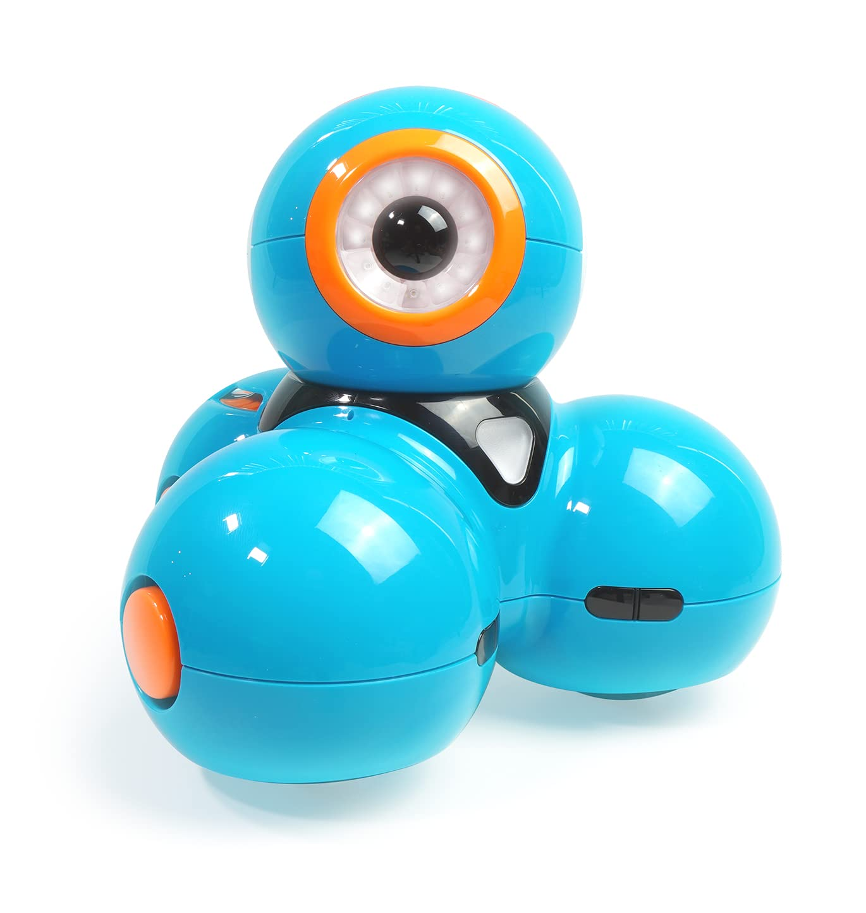
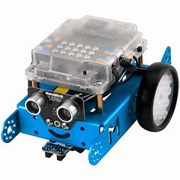

| Main | List | Projects | School |
|---|
|  | I learnt how to program the Dash robot to navigate the obstacle course. | |
I created the Space Invader game in Python where the player controls the tank to eliminate the aliens |
|  | I programmed the mBot to follow lines and grab objects | |
I created a mini monkey game in Scratch 3.0that invovles the player to get through the maze to find its parents. |